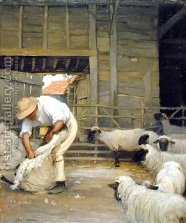

Bava Kamma 95 - One Stole a Pregnant Cow, and it Gave Birth

If one stole a pregnant cow, and it gave birth, or a wool-laden ewe and he sheared it, he pays the value of a cow ready to give birth, or the value of a ewe ready to be shorn.
Other opinions:
If one steals an ewe and he sheared it, or a cow and it gave birth...
* Rabbi Meir - He pays it, its shearings and its offspring; * Rabbi Yehuda - the stolen animal returns to the original owner as is; * Rabbi Shimon - We view it as if it was an article appraised and place with him according to its cash value at the time of robbery.